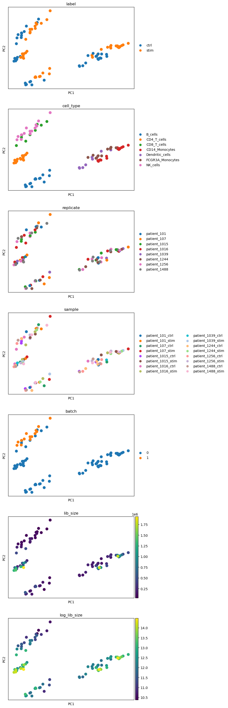
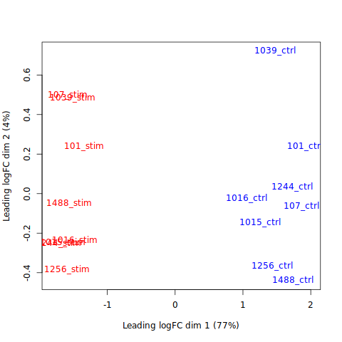
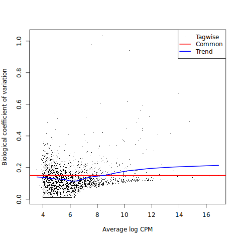
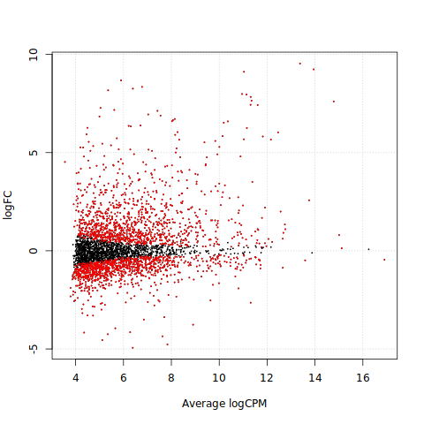
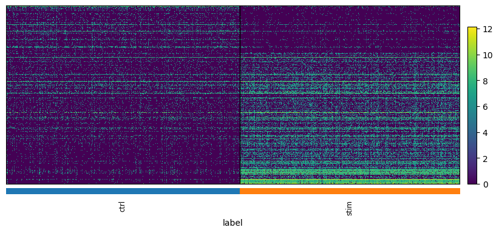
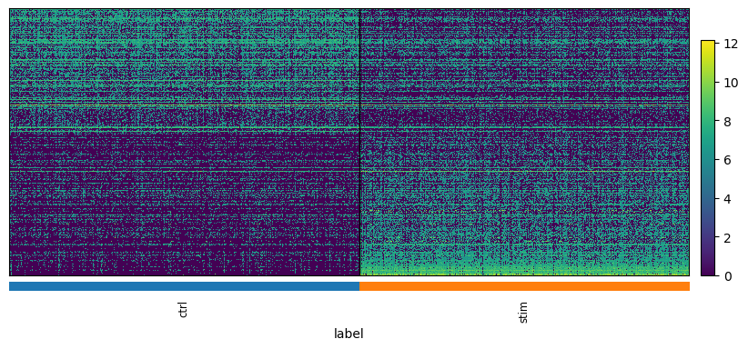
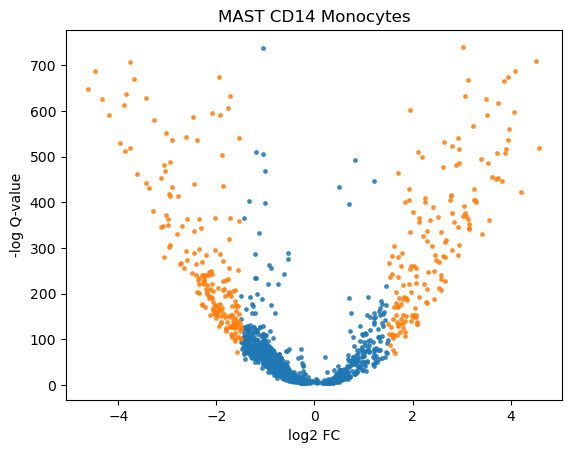
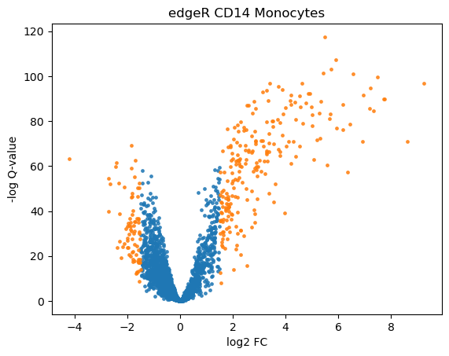

18. 差异基因表达分析#
关键要点
在 scRNA-seq 中，来自同一实验对象的重复测量（即细胞）会在测量之间引入相关性，需要把实验单位建模为随机效应（Random Effect）来加以调整，以缓解伪重复（pseudoreplication）问题。可以通过求和或求平均的聚合（pseudobulk 方法——用固定效应或随机效应项），或者把个体作为随机效应来处理（单细胞方法），从而缓解伪重复问题。
在实验设计中加入更多样本，是提升统计功效（statistical power）的最佳方式。
环境设置
安装 conda:
在创建环境之前，请确保 conda 已安装在您的系统中。
保存 yml 内容:
将 yml 选项卡中的内容复制到名为
environment.yml的文件中。
创建环境:
打开终端或命令提示符。
运行以下命令：
conda env create -f environment.yml
激活环境:
创建好环境后，使用以下命令激活它：
conda activate <environment_name>
替换
<environment_name>，名称就是在environment.yml文件中指定的那个。在 yml 文件里，它看起来像这样：name: <environment_name>
验证安装:
通过运行以下命令，检查环境是否创建成功：
conda env list
name: differential-gene-expression
channels:
- conda-forge
- bioconda
- defaults
dependencies:
- conda-forge::python=3.12.12
- conda-forge::r-base=4.4.3
- bioconda::bioconductor-mast=1.32.0
- bioconda::bioconductor-edger=4.4.0
- bioconda::bioconductor-singlecellexperiment=1.28.0
- conda-forge::r-lme4
- conda-forge::rpy2=3.6.4
- bioconda::anndata2ri=2.0
- conda-forge::pip
- pip:
- pertpy==1.0.4
18.1. 动机#
本章是“注释”一章的更详细延续——那一章已经介绍了差异基因表达（DGE）作为用细胞类型注释聚类的工具。这里，我们关注差异基因表达检验在更复杂实验设计上的进阶用例，这些设计涉及一个或多个条件，例如疾病、基因敲除或药物。在这类情形中，我们通常关心的是：感兴趣的条件与某个参考之间，基因表达模式差异的大小和显著性。这个参考可以是任何东西，但通常是健康样本。这种统计检验可以应用于任意分组，但在单细胞 RNA-Seq 中，通常应用在细胞类型层面。

图18.1 差异基因表达分析试图推断出：在任意被比较的分组之间（通常是每种细胞类型的健康组与条件组之间），统计上显著高表达或低表达的基因。#
这种分析的结果可以是一些基因集，它们影响并可能解释所观察到的任何表型。随后可以对这些基因集做更深入的考察，例如它们涉及哪些受影响的通路，或诱发了哪些细胞间通讯的变化。
差异基因表达检验通常会为每个被比较的基因、在每组被比较的条件下，返回 log2 倍数变化（fold-change）和校正后的 p 值。随后可以按 p 值对这个列表排序，并做更详细的考察。
常用的学生 t 检验（Student's t-test）是进行此类检验的一种方式。然而，它没有考虑单细胞 RNA-seq 的若干特性，例如由漏检（dropout）导致的零值过多，或对复杂实验设计的需求。更具体地说，人们很少有足够的样本量，能够在不跨基因汇集信息的情况下准确估计方差。此外，原始计数从来都不是某个样本内特定基因表达的绝对度量：每个基因的实际读数取决于文库制备的效率、来自非编码转录本的污染量，以及测序深度。因此，它在单细胞 RNA-seq 上既缺乏灵敏度也缺乏特异性，更谈不上实验设计的灵活性。
因此，差异基因表达检验是一个经典的生物信息学问题，已经有许多工具来解决它。一般来说，目前主要从两种视角来处理这个问题：一种是样本层面的视角，把表达聚合起来构造“pseudobulk（拟批量）”，再用最初为批量表达样本设计的方法（如 edgeR[Robinson et al., 2010] 或 DEseq2[Love et al., 2014]）来分析；另一种是细胞层面的视角，用广义混合效应模型（如 MAST[Finak et al., 2015] 或 glmmTMB[Brooks et al., 2017]）单独对每个细胞建模。各 DGE 工具在不同数据集之间的一致性和稳健性都很低 [Das et al., 2021, Wang et al., 2019]。如前所述，尽管单细胞数据含有技术噪声带来的伪影，例如漏检、零膨胀（zero-inflation）和很高的细胞间变异性 [Hicks et al., 2017, Luecken and Theis, 2019, Vallejos et al., 2017]，为批量 RNA-seq 数据设计的方法，其表现优于那些专门为 scRNA-seq 数据设计的方法[Das et al., 2021, Jaakkola et al., 2016, Soneson and Robinson, 2018, Squair et al., 2021]。研究还发现，单细胞专用方法尤其容易把高表达基因错误地标记为差异表达。
最近一项研究强调了伪重复（pseudoreplication）问题：把推断统计应用到并非统计独立的生物学重复上。如果不考虑重复（来自同一个体的细胞）之间固有的相关性，就会抬高假发现率（FDR）[Junttila et al., 2022, Squair et al., 2021, Zimmerman et al., 2021]。因此，在做 DGE 分析之前，应当先做批次效应校正，或者把某个个体内细胞类型特异的表达值通过求和、求平均或每个体一个随机效应的方式聚合起来（即生成 pseudobulk），以此考虑样本内的相关性 [Zimmerman et al., 2021]。一般来说，既包括用求和聚合的 pseudobulk 方法（如 edgeR、DESeq2 或 Limma[Ritchie et al., 2015]），也包括带随机效应设置的混合模型（如 MAST），都被发现优于一些朴素的方法，例如常用的 Wilcoxon 秩和检验或 Seurat 的 [Hao et al., 2021] 潜变量模型，这些模型并未考虑这些因素[Junttila et al., 2022].
针对 Zimmerman 论文引出的问题，Murphy 等人批判性地审视了 Zimmerman 的基准测试策略并加以改进 [Murphy and Skene, 2022]。他们得出的结论是：pseudobulk 方法表现最好，但究竟是求和还是求平均聚合更优，还需要进一步研究。
因此，在本笔记本中，我们演示如何使用两种工具来做差异表达（DE）分析：使用拟似然（quasi-likelihood）检验的 edgeR，以及带随机效应的 MAST。由于 edgeR 和 MAST 都是用 R 实现的，我们使用 anndata2ri 包，以便能够同时操作 Python 中的 AnnData 对象和 R 中的 SingleCellExperiment 对象。
对于这两种方法，我们各展示两种用例：如何在完整数据上运行分析，以及如何对多种细胞类型、和对某一种特定细胞类型进行检验。
18.2. 环境设置#
import warnings
warnings.filterwarnings("ignore")
import logging
import random
import anndata2ri
import matplotlib.pyplot as plt
import numpy as np
import pandas as pd
import pertpy
import rpy2.rinterface_lib.callbacks
import sc_toolbox
import scanpy as sc
import seaborn as sns
from rpy2.robjects import pandas2ri
sc.settings.verbosity = 0
rpy2.rinterface_lib.callbacks.logger.setLevel(logging.ERROR)
pandas2ri.activate()
anndata2ri.activate()
%load_ext rpy2.ipython
To use sccoda or tasccoda please install ete3 with pip install ete3
%%R
library(edgeR)
library(MAST)
18.3. 准备数据集#
我们将使用 Kang 数据集，这是一份基于 10x 液滴的 scRNA-seq 外周血单核细胞（PBMC）数据，来自 8 名狼疮（Lupus）患者，在用 IFN-β 处理 6 小时之前和之后采集（共 16 个样本）[Kang et al., 2018]。干扰素 β（interferon beta）以天然成纤维细胞制剂或重组制剂（干扰素 β-1a 和干扰素 β-1b）的形式使用，具有与干扰素 α 类似的抗病毒和抗增殖特性。干扰素 β 已被批准用于治疗复发-缓解型多发性硬化症和继发进展型多发性硬化症。
首先，我们加载完整的数据集。
adata = pertpy.data.kang_2018()
adata
AnnData object with n_obs × n_vars = 24673 × 15706
obs: 'nCount_RNA', 'nFeature_RNA', 'tsne1', 'tsne2', 'label', 'cluster', 'cell_type', 'replicate', 'nCount_SCT', 'nFeature_SCT', 'integrated_snn_res.0.4', 'seurat_clusters'
var: 'name'
obsm: 'X_pca', 'X_umap'
我们需要 label （包含条件标签）、 replicate 和 cell_type 等列，来自 .obs.
adata.obs[:5]
| nCount_RNA | nFeature_RNA | tsne1 | tsne2 | label | cluster | cell_type | replicate | nCount_SCT | nFeature_SCT | integrated_snn_res.0.4 | seurat_clusters | |
|---|---|---|---|---|---|---|---|---|---|---|---|---|
| index | ||||||||||||
| AAACATACATTTCC-1 | 3017.0 | 877 | -27.640373 | 14.966629 | ctrl | 9 | CD14+ Monocytes | patient_1016 | 1704.0 | 711 | 1 | 1 |
| AAACATACCAGAAA-1 | 2481.0 | 713 | -27.493646 | 28.924885 | ctrl | 9 | CD14+ Monocytes | patient_1256 | 1614.0 | 662 | 1 | 1 |
| AAACATACCATGCA-1 | 703.0 | 337 | -10.468194 | -5.984389 | ctrl | 3 | CD4 T cells | patient_1488 | 908.0 | 337 | 6 | 6 |
| AAACATACCTCGCT-1 | 3420.0 | 850 | -24.367997 | 20.429285 | ctrl | 9 | CD14+ Monocytes | patient_1256 | 1738.0 | 653 | 1 | 1 |
| AAACATACCTGGTA-1 | 3158.0 | 1111 | 27.952170 | 24.159738 | ctrl | 4 | Dendritic cells | patient_1039 | 1857.0 | 928 | 12 | 12 |
我们需要使用原始计数，因此我们检查 .X 确实包含原始计数，然后把它们放入我们 AnnData 对象的 counts 层中。
np.max(adata.X)
3828.0
adata.layers["counts"] = adata.X.copy()
我们有 8 名对照者和 8 名患病者。
print(len(adata[adata.obs["label"] == "ctrl"].obs["replicate"].cat.categories))
print(len(adata[adata.obs["label"] == "stim"].obs["replicate"].cat.categories))
8
8
我们过滤掉表达基因少于 200 个的细胞，以及在少于 3 个细胞中出现的基因，以进行基本的质量控制。
sc.pp.filter_cells(adata, min_genes=200)
sc.pp.filter_genes(adata, min_cells=3)
adata
AnnData object with n_obs × n_vars = 24562 × 15701
obs: 'nCount_RNA', 'nFeature_RNA', 'tsne1', 'tsne2', 'label', 'cluster', 'cell_type', 'replicate', 'nCount_SCT', 'nFeature_SCT', 'integrated_snn_res.0.4', 'seurat_clusters', 'n_genes'
var: 'name', 'n_cells'
obsm: 'X_pca', 'X_umap'
layers: 'counts'
18.4. 伪混池#
edgeR 是一个用 R 实现的差异基因表达检验工具，最初是为批量（bulk）基因表达数据设计的。它实现了一系列统计方法，基于负二项分布、经验贝叶斯估计、精确检验、广义线性模型（GLM）和拟似然检验。
更多细节请参阅原始论文[Robinson et al., 2010].
这里，我们将使用拟似然检验，因为它考虑了离散度估计的不确定性。相比之下，精确检验假设估计出的离散度就是真值，这可能带来一些误差。此外，拟似然 GLM 在实验设计方面也更灵活。
由于 edgeR 最初是作为批量数据的 DE 分析方法引入的，我们首先需要从单细胞数据集中构造 pseudobulk 样本。对每个患者，我们为每种细胞类型构造 1 个 pseudobulk 样本——做法是把该亚群中的细胞聚合起来，取该亚群内的平均基因表达。
如果你处理的数据没有重复（replicates），那么为每个患者构造多个（例如 2–3 个）pseudobulk，以反映患者间的变异，可能会有好处。这里我们选择每个患者构造 1 个 pseudobulk，因为对每个患者我们有两个重复：一个对照、一个受刺激。
我们强烈建议阅读这份关于设计矩阵的指南：https://f1000research.com/articles/9-1444 。
无论我们是想只在少数几个细胞亚群上做分析、并为每个亚群单独拟合一个模型，还是为所有亚群拟合同一个模型，我们都首先需要准备数据、定义一个构造 pseudobulk 的函数，并运行 edgeR 流程。首先，我们来准备数据。
由于我们需要为每个“患者-条件”组合构造 pseudobulk，我们首先需要通过拼接来创建这样一列 replicate 和 label.
adata.obs["sample"] = [
f"{rep}_{l}" for rep, l in zip(adata.obs["replicate"], adata.obs["label"], strict=False)
]
我们需要清理细胞类型名称，即把空格替换为下划线、去掉加号，以避免 Python 到 R 的转换问题。
adata.obs["cell_type"] = [ct.replace(" ", "_") for ct in adata.obs["cell_type"]]
adata.obs["cell_type"] = [ct.replace("+", "") for ct in adata.obs["cell_type"]]
我们需要把类别型（categorical）元数据确实设为类别型，才能构造 pseudobulk。
adata.obs["replicate"] = adata.obs["replicate"].astype("category")
adata.obs["label"] = adata.obs["label"].astype("category")
adata.obs["sample"] = adata.obs["sample"].astype("category")
adata.obs["cell_type"] = adata.obs["cell_type"].astype("category")
现在，我们来定义把单细胞聚合成伪重复（pseudo-replicate）所需的函数：
aggregate_and_filter是一个函数，它从原始的单细胞 AnnData 对象出发，为指定亚群中的每个供体创建一个含一个伪重复的 AnnData 对象。在此，我们还会过滤掉那些在指定群体中细胞数少于 30 的供体。通过修改
replicates_per_patient参数，可以为每个样本创建若干（n）个伪重复；细胞随后会被分成 n 个大小大致相等的子集。
NUM_OF_CELL_PER_DONOR = 30
def aggregate_and_filter(
adata,
cell_identity,
donor_key="sample",
condition_key="label",
cell_identity_key="cell_type",
obs_to_keep=None, # which additional metadata to keep, e.g. gender, age, etc.
replicates_per_patient=1,
):
# subset adata to the given cell identity
if obs_to_keep is None:
obs_to_keep = []
adata_cell_pop = adata[adata.obs[cell_identity_key] == cell_identity].copy()
# check which donors to keep according to the number of cells specified with NUM_OF_CELL_PER_DONOR
size_by_donor = adata_cell_pop.obs.groupby([donor_key]).size()
donors_to_drop = [
donor
for donor in size_by_donor.index
if size_by_donor[donor] <= NUM_OF_CELL_PER_DONOR
]
if len(donors_to_drop) > 0:
print("Dropping the following samples:")
print(donors_to_drop)
df = pd.DataFrame(columns=[*adata_cell_pop.var_names, *obs_to_keep])
adata_cell_pop.obs[donor_key] = adata_cell_pop.obs[donor_key].astype("category")
for i, donor in enumerate(donors := adata_cell_pop.obs[donor_key].cat.categories):
print(f"\tProcessing donor {i+1} out of {len(donors)}...", end="\r")
if donor not in donors_to_drop:
adata_donor = adata_cell_pop[adata_cell_pop.obs[donor_key] == donor]
# create replicates for each donor
indices = list(adata_donor.obs_names)
random.shuffle(indices)
indices = np.array_split(np.array(indices), replicates_per_patient)
for i, rep_idx in enumerate(indices):
adata_replicate = adata_donor[rep_idx]
# specify how to aggregate: sum gene expression for each gene for each donor and also keep the condition information
agg_dict = dict.fromkeys(adata_replicate.var_names, "sum")
for obs in obs_to_keep:
agg_dict[obs] = "first"
# create a df with all genes, donor and condition info
df_donor = pd.DataFrame(adata_replicate.X.A)
df_donor.index = adata_replicate.obs_names
df_donor.columns = adata_replicate.var_names
df_donor = df_donor.join(adata_replicate.obs[obs_to_keep])
# aggregate
df_donor = df_donor.groupby(donor_key).agg(agg_dict)
df_donor[donor_key] = donor
df.loc[f"donor_{donor}_{i}"] = df_donor.loc[donor]
print("\n")
# create AnnData object from the df
adata_cell_pop = sc.AnnData(
df[adata_cell_pop.var_names], obs=df.drop(columns=adata_cell_pop.var_names)
)
return adata_cell_pop
我们还需要定义一个单独的函数来拟合 edgeR 的 GLM：
fit_model以一个 SingleCellExperiment 对象作为输入，构造设计矩阵并输出拟合好的 GLM。我们还会输出一个 DGEList 类的 edgeR 对象，以便做一些探索性数据分析（EDA）。
%%R
fit_model <- function(adata_){
# create an edgeR object with counts and grouping factor
y <- DGEList(assay(adata_, "X"), group = colData(adata_)$label)
# filter out genes with low counts
print("Dimensions before subsetting:")
print(dim(y))
print("")
keep <- filterByExpr(y)
y <- y[keep, , keep.lib.sizes=FALSE]
print("Dimensions after subsetting:")
print(dim(y))
print("")
# normalize
y <- calcNormFactors(y)
# create a vector that is a concatenation of condition and cell type that we will later use with contrasts
group <- paste0(colData(adata_)$label, ".", colData(adata_)$cell_type)
replicate <- colData(adata_)$replicate
# create a design matrix: here we have multiple donors so also consider that in the design matrix
design <- model.matrix(~ 0 + group + replicate)
# estimate dispersion
y <- estimateDisp(y, design = design)
# fit the model
fit <- glmQLFit(y, design)
return(list("fit"=fit, "design"=design, "y"=y))
}
现在我们已经定义好了所需的全部函数，可以着手构造 pseudobulk 了。我们之后可能还想查看现有的元数据，因此把它保留在 AnnData 对象中。
obs_to_keep = ["label", "cell_type", "replicate", "sample"]
我们需要把原始计数传给 edgeR，因此我们设置 .X to the counts 层，以确保伪重复是基于原始计数创建的。
adata.X = adata.layers["counts"].copy()
接下来，我们用 pseudobulk 来创建 AnnData 对象。
# process first cell type separately...
cell_type = adata.obs["cell_type"].cat.categories[0]
print(
f'Processing {cell_type} (1 out of {len(adata.obs["cell_type"].cat.categories)})...'
)
adata_pb = aggregate_and_filter(adata, cell_type, obs_to_keep=obs_to_keep)
for i, cell_type in enumerate(adata.obs["cell_type"].cat.categories[1:]):
print(
f'Processing {cell_type} ({i+2} out of {len(adata.obs["cell_type"].cat.categories)})...'
)
adata_cell_type = aggregate_and_filter(adata, cell_type, obs_to_keep=obs_to_keep)
adata_pb = adata_pb.concatenate(adata_cell_type)
Processing B_cells (1 out of 8)...
Dropping the following samples:
['patient_1039_ctrl']
Processing donor 16 out of 16...
Processing CD14_Monocytes (2 out of 8)...
Processing donor 16 out of 16...
Processing CD4_T_cells (3 out of 8)...
Processing donor 16 out of 16...
Processing CD8_T_cells (4 out of 8)...
Dropping the following samples:
['patient_101_ctrl', 'patient_1039_ctrl', 'patient_1039_stim', 'patient_107_ctrl', 'patient_107_stim', 'patient_1244_ctrl', 'patient_1244_stim']
Processing donor 16 out of 16...
Processing Dendritic_cells (5 out of 8)...
Dropping the following samples:
['patient_1016_ctrl', 'patient_1016_stim', 'patient_101_ctrl', 'patient_1039_ctrl', 'patient_1039_stim', 'patient_107_ctrl', 'patient_107_stim']
Processing donor 16 out of 16...
Processing FCGR3A_Monocytes (6 out of 8)...
Dropping the following samples:
['patient_1039_ctrl', 'patient_1039_stim', 'patient_107_ctrl', 'patient_107_stim', 'patient_1244_stim']
Processing donor 16 out of 16...
Processing Megakaryocytes (7 out of 8)...
Dropping the following samples:
['patient_1015_ctrl', 'patient_1015_stim', 'patient_1016_ctrl', 'patient_101_ctrl', 'patient_1039_stim', 'patient_107_stim', 'patient_1244_ctrl', 'patient_1244_stim', 'patient_1256_ctrl', 'patient_1256_stim', 'patient_1488_ctrl']
Processing donor 11 out of 11...
Processing NK_cells (8 out of 8)...
Dropping the following samples:
['patient_1039_ctrl', 'patient_1039_stim']
Processing donor 16 out of 16...
差异基因表达结果的有效性，在很大程度上取决于统计模型是否捕捉到了变异的主轴。一些中间的数据探索步骤——例如对 pseudobulk 样本做主成分分析（PCA）或多维标度（MDS）——可以帮助识别变异的来源，从而指导构建相应的、用于对数据建模的设计矩阵和对比矩阵[Law et al., 2020].
对于包含生物学重复的实验，如果不考虑多种生物学变异来源，就会抬高 FDR[Thurman et al., 2021],[Lähnemann et al., 2020]。增加每个个体的细胞数虽然能提高精度，但对“检测个体间差异”的效能影响有限。因此，提升统计功效最好的办法，是增加独立实验样本的数量[Zimmerman et al., 2021].
由于我们的数据已经生成，无法再增加独立实验样本的数量。尽管如此，我们现在会探索数据，确定变异的主轴，以便恰当地生成设计矩阵。
我们在构造出的伪重复上做非常基础的 EDA，检查是否有些患者 / pseudobulk 是离群值、需要排除，以免使 DE 结果产生偏倚。我们把原始计数保存在 'counts' 层中，然后对计数做归一化，并为归一化后的 pseudobulk 计数计算 PCA 坐标。
adata_pb.layers['counts'] = adata_pb.X.copy()
sc.pp.normalize_total(adata_pb, target_sum=1e6)
sc.pp.log1p(adata_pb)
sc.pp.pca(adata_pb)
接下来，我们在 PCA 图上查看构造出的伪重复，并按所有可用的元数据着色，看看是否存在我们可能想纳入设计矩阵的混杂因素。我们还会加上一个 lib_size 和 log_lib_size 列，用来检查文库大小与各 PC 主成分之间是否存在相关性。
adata_pb.obs["lib_size"] = np.sum(adata_pb.layers["counts"], axis=1)
adata_pb.obs["log_lib_size"] = np.log(adata_pb.obs["lib_size"])
sc.pl.pca(adata_pb, color=adata_pb.obs, ncols=1, size=300)

我们在 PCA 图上观察到细胞类型的分离，以及受刺激与未受刺激细胞的分离。其他协变量（批次）似乎与 PCA 主成分没有明显相关，因此我们的设计矩阵中不纳入它们中的任何一个。
如上所述，edgeR 以原始计数作为输入，因此我们把计数放回 .X 字段中，然后再继续。
adata_pb.X = adata_pb.layers['counts'].copy()
18.4.1. 一组#
首先，我们展示如何为某一种特定细胞类型准备数据、构造设计矩阵并进行 DE 检验。
我们在数据的 CD14+ 单核细胞子集上运行该流程，因为论文中显示，这个亚群中识别出的 DE 基因数量最多。
adata_mono = adata_pb[adata_pb.obs["cell_type"] == "CD14_Monocytes"]
adata_mono
View of AnnData object with n_obs × n_vars = 16 × 15701
obs: 'label', 'cell_type', 'replicate', 'sample', 'batch', 'lib_size', 'log_lib_size'
uns: 'log1p', 'pca', 'label_colors', 'cell_type_colors', 'replicate_colors', 'sample_colors', 'batch_colors'
obsm: 'X_pca'
varm: 'PCs'
layers: 'counts'
清理样本名称，让图不那么拥挤。
adata_mono.obs_names = [
name.split("_")[2] + "_" + name.split("_")[3] for name in adata_mono.obs_names
]
%%time
%%R -i adata_mono
outs <-fit_model(adata_mono)
[1] "Dimensions before subsetting:"
[1] 15701 16
[1] ""
[1] "Dimensions after subsetting:"
[1] 3709 16
[1] ""
CPU times: user 2.95 s, sys: 224 ms, total: 3.18 s
Wall time: 4.27 s
%%R
fit <- outs$fit
y <- outs$y
由于我们进入分析时并没有“某个特定基因会上调或下调”的先验假设，因此需要借助可视化来解读 DGE 结果。MDS 图可以给出一个高层次的概览。通常，我们预期来自不同条件的样本会分开，正如下图我们的结果所示。
%%R
plotMDS(y, col=ifelse(y$samples$group == "stim", "red", "blue"))
Fontconfig warning: ignoring UTF-8: not a valid region tag

生物学变异系数（Biological Coefficient of Variation，BCV）图，展示的是每个基因在各生物学组中平均的变异性随平均表达的变化关系。例如，BCV 为 0.3 表示各组之间基因表达平均有 30% 的变异。
丰度低的基因通常表现出更大的 BCV，因为对低丰度基因而言，读数测量更不确定。另一方面，平均表达高的基因被量化得更可靠，因此变异性通常更低、BCV 也更低。可以用这张图来检测离群基因，或找出其他可能需要在设计矩阵中体现的实验因素。例如，图右上角出现的一组平均表达高、BCV 也高的基因，可能提示存在实验应激、污染等问题，尤其当它们属于相似的基因家族时。
BCV 是离散度的平方根。tagwise（逐基因）BCV 趋势与公共（common）BCV 趋势之间的距离，反映逐基因的离散度估计是否高度可变（即基因表达存在异质性）。如果逐基因的离散度值非常不一致，就会施加较少的压缩（moderation）以保留这种异质性。这两条曲线上任意两点之间的距离，反映某个基因的离散度向公共趋势收缩了多少——也就是说，它体现了所施加的离散度压缩量。
在下面的 BCV 图中，我们看到一些高 BCV 的低丰度基因，但没有高 BCV 的高丰度基因，这表明不需要在设计矩阵中再额外建模其他实验因素。
%%R
plotBCV(y)

接下来，我们进行拟似然检验，以找出对照与受刺激两种条件之间的 DE 基因。我们先看看设计矩阵有哪些列，以便指定正确的列来做检验。
%%R
colnames(y$design)
[1] "groupctrl.CD14_Monocytes" "groupstim.CD14_Monocytes"
[3] "replicatepatient_107" "replicatepatient_1015"
[5] "replicatepatient_1016" "replicatepatient_1039"
[7] "replicatepatient_1244" "replicatepatient_1256"
[9] "replicatepatient_1488"
%%R -o tt
myContrast <- makeContrasts('groupstim.CD14_Monocytes-groupctrl.CD14_Monocytes', levels = y$design)
qlf <- glmQLFTest(fit, contrast=myContrast)
# get all of the DE genes and calculate Benjamini-Hochberg adjusted FDR
tt <- topTags(qlf, n = Inf)
tt <- tt$table
我们来检查这张表：对于没有被 edgeR 过滤掉的每个基因（在我们的例子中是 3709 个），表中包含了 DE 检验的结果。这张表可以保存为一个 .csv 文件以备后用，并用于可视化。我们将在对完整数据运行分析之后，在本节末尾展示如何使用火山图。
tt.shape
(3709, 5)
tt[:5]
| logFC | logCPM | F | PValue | FDR | |
|---|---|---|---|---|---|
| HESX1 | 8.345536 | 6.773420 | 1281.013295 | 1.837373e-15 | 2.766927e-12 |
| CD38 | 7.126846 | 7.420668 | 1243.793133 | 2.266164e-15 | 2.766927e-12 |
| NT5C3A | 5.657050 | 8.327003 | 1218.102628 | 2.628780e-15 | 2.766927e-12 |
| SOCS1 | 4.388247 | 6.943768 | 1191.289806 | 3.079524e-15 | 2.766927e-12 |
| GMPR | 6.943484 | 7.031832 | 1159.601183 | 3.730018e-15 | 2.766927e-12 |
顺带一提，使用以下方法，还可以检验相对于某个指定倍数变化、对给定系数或对比而言差异表达的基因 glmTreat.
%%R
tr <- glmTreat(fit, contrast=myContrast, lfc=1.5)
print(head(topTags(tr)))
Coefficient: -1*groupctrl.CD14_Monocytes 1*groupstim.CD14_Monocytes
logFC unshrunk.logFC logCPM PValue FDR
HESX1 8.345536 8.702486 6.773420 2.108737e-14 3.535749e-11
CD38 7.126846 7.219184 7.420668 2.292459e-14 3.535749e-11
NT5C3A 5.657050 5.674640 8.327003 3.149544e-14 3.535749e-11
IL1RN 6.588583 6.596787 10.358946 4.249159e-14 3.535749e-11
GMPR 6.943484 7.047504 7.031832 4.766446e-14 3.535749e-11
DEFB1 6.654201 6.696759 8.067159 7.670147e-14 4.741429e-11
最后，我们可以看看有多少基因的 FDR 校正值小于 0.01。
smear 图（也叫 MA 图，即 M 值对 A 值的图）展示基因的对数倍数变化随其平均丰度的变化关系。我们通常会在低丰度区间观察到更高的 logFC，因为在低丰度时读数更易变动，导致 logFC 估计偏大。如果我们对 logFC 和平均 logCPM 值拟合一条 loess（局部加权回归）曲线，趋势应当大致以零为中心。任何偏离都可能表明数据没有被正确归一化。平均表达大、且 logFC 绝对值大的基因，可以标记出生物学上值得调查和跟进的基因。
%%R
plotSmear(qlf, de.tags = rownames(tt)[which(tt$FDR<0.01)])

18.4.2. 多个组#
接下来，我们展示如何在包含所有可用细胞类型的完整数据集上，用对比（contrast）来准备数据、构造设计矩阵并进行 DE 检验。
%%time
%%R -i adata_pb
outs <-fit_model(adata_pb)
[1] "Dimensions before subsetting:"
[1] 15701 90
[1] ""
[1] "Dimensions after subsetting:"
[1] 2358 90
[1] ""
CPU times: user 11.9 s, sys: 39.7 ms, total: 12 s
Wall time: 12 s
%%R
fit <- outs$fit
y <- outs$y
现在，我们使用对比为每种细胞类型做一次拟似然检验。由于在 R 循环内部没有直接的办法把表格从 R 传到 Python，我们对每种细胞类型手动获取结果。
%%R -i adata_pb -o de_per_cell_type
de_per_cell_type <- list()
for (cell_type in unique(colData(adata_pb)$cell_type)) {
print(cell_type)
# create contrast for this cell type
myContrast <- makeContrasts(paste0("groupstim.", cell_type, "-groupctrl.", cell_type), levels = y$design)
# perform QLF test
qlf <- glmQLFTest(fit, contrast=myContrast)
# get all of the DE genes and calculate Benjamini-Hochberg adjusted FDR
tt <- topTags(qlf, n = Inf)
# save in the list with the results for all the cell types
de_per_cell_type[[cell_type]] <- tt$table
}
[1] "B_cells"
[1] "CD14_Monocytes"
[1] "CD4_T_cells"
[1] "CD8_T_cells"
[1] "Dendritic_cells"
[1] "FCGR3A_Monocytes"
[1] "NK_cells"
现在，我们把它保存到 .uns 中，它属于我们原始的 adata 对象，使用 sc_toolbox.tools.de_res_to_anndata from sc_toolbox 软件包（schillerlab/sc-toolbox），它会把结果保存成仿佛是用 scanpy 的 rank_genes_groups() 函数创建的那样。像这样存储 DE 表的好处是，我们现在也可以使用标准的 scanpy 绘图函数。我们把 DEG 表保存为 .csv （为每种细胞类型各保存一份），因为我们稍后在“细胞间通讯”一章中会用到它们。
# get cell types that we ran the analysis for
cell_types = de_per_cell_type.keys()
# add the table to .uns for each cell type
for cell_type in cell_types:
df = de_per_cell_type[cell_type]
df["gene_symbol"] = df.index
df["cell_type"] = cell_type
sc_toolbox.tools.de_res_to_anndata(
adata,
df,
groupby="cell_type",
score_col="logCPM",
pval_col="PValue",
pval_adj_col="FDR",
lfc_col="logFC",
key_added="edgeR_" + cell_type,
)
df.to_csv(f"de_edgeR_{cell_type}.csv")
为了再次把这张表表示为 pandas DataFrame，我们使用 sc.get.rank_genes_groups_df 函数。
sc.get.rank_genes_groups_df(adata, group="CD14_Monocytes", key="edgeR_CD14_Monocytes")[
:5
]
| names | scores | logfoldchanges | pvals | pvals_adj | |
|---|---|---|---|---|---|
| 0 | FTH1 | 16.186098 | -0.572272 | 0.001589 | 0.002712 |
| 1 | MALAT1 | 16.025682 | 0.010049 | 0.877078 | 0.897245 |
| 2 | B2M | 15.468524 | 0.677266 | 0.0 | 0.0 |
| 3 | TMSB4X | 15.054697 | -0.217131 | 0.004663 | 0.007331 |
| 4 | FTL | 14.984937 | -0.041832 | 0.669951 | 0.710956 |
18.4.3. 关于 edgeR 的说明#
需要原始计数作为输入
需要来自单细胞实验的 pseudobulk
如果单细胞实验中有多个供体，且用户想考虑患者间的变异，我们建议为每个患者创建 2 或 3 个伪重复，并把患者信息纳入设计矩阵
18.5. 单细胞专用方法#
MAST 框架用一个两部分的广义线性模型来对单细胞基因表达建模。MAST 的一个组件对每个基因在各细胞中的离散表达率建模，另一个组件则对条件连续表达水平建模（以该基因确实表达为条件）。更多细节请参阅原始论文[Finak et al., 2015].
MAST 以归一化后的计数作为输入，因此我们先取出“counts”层，然后再执行归一化步骤。
adata.X = adata.layers["counts"].copy()
sc.pp.normalize_total(adata, target_sum=1e6)
sc.pp.log1p(adata)
我们定义一个小的辅助函数，处理 R 与 Python 之间的一些对象类型转换问题。我们还需要为每个亚群过滤掉只在很少细胞（这里是 3 个）中表达的基因，因为模型需要能够估计每个基因的方差。
def prep_anndata(adata_):
def fix_dtypes(adata_):
df = pd.DataFrame(adata_.X.A, index=adata_.obs_names, columns=adata_.var_names)
df = df.join(adata_.obs)
return sc.AnnData(df[adata_.var_names], obs=df.drop(columns=adata_.var_names))
adata_ = fix_dtypes(adata_)
sc.pp.filter_genes(adata_, min_cells=3)
return adata_
18.5.1. 一组#
和 edgeR 一样，可以用完整数据集来拟合模型，再用对比对每种感兴趣的细胞类型分别检验；但在本笔记本中，为缩短运行时间，我们只展示针对一种细胞类型（即 CD14 单核细胞）的 MAST-RE 流程。
adata_mono = adata[adata.obs["cell_type"] == "CD14_Monocytes"].copy()
adata_mono
AnnData object with n_obs × n_vars = 5696 × 15701
obs: 'nCount_RNA', 'nFeature_RNA', 'tsne1', 'tsne2', 'label', 'cluster', 'cell_type', 'replicate', 'nCount_SCT', 'nFeature_SCT', 'integrated_snn_res.0.4', 'seurat_clusters', 'n_genes', 'sample'
var: 'name', 'n_cells'
uns: 'edgeR_B_cells', 'edgeR_CD14_Monocytes', 'edgeR_CD4_T_cells', 'edgeR_CD8_T_cells', 'edgeR_Dendritic_cells', 'edgeR_FCGR3A_Monocytes', 'edgeR_NK_cells', 'log1p'
obsm: 'X_pca', 'X_umap'
layers: 'counts'
sc.pp.filter_genes(adata_mono, min_cells=3)
adata_mono
AnnData object with n_obs × n_vars = 5696 × 12268
obs: 'nCount_RNA', 'nFeature_RNA', 'tsne1', 'tsne2', 'label', 'cluster', 'cell_type', 'replicate', 'nCount_SCT', 'nFeature_SCT', 'integrated_snn_res.0.4', 'seurat_clusters', 'n_genes', 'sample'
var: 'name', 'n_cells'
uns: 'edgeR_B_cells', 'edgeR_CD14_Monocytes', 'edgeR_CD4_T_cells', 'edgeR_CD8_T_cells', 'edgeR_Dendritic_cells', 'edgeR_FCGR3A_Monocytes', 'edgeR_NK_cells', 'log1p'
obsm: 'X_pca', 'X_umap'
layers: 'counts'
然后我们过滤上述两个对象。
adata_mono = prep_anndata(adata_mono)
adata_mono
AnnData object with n_obs × n_vars = 5696 × 12268
obs: 'nCount_RNA', 'nFeature_RNA', 'tsne1', 'tsne2', 'label', 'cluster', 'cell_type', 'replicate', 'nCount_SCT', 'nFeature_SCT', 'integrated_snn_res.0.4', 'seurat_clusters', 'n_genes', 'sample'
var: 'n_cells'
和任何进行多重统计检验的情形一样，对各条件下的 DGE 检验所得到的 p 值，必须使用例如 Benjamini-Hochberg 校正来做多重检验校正[Luecken and Theis, 2019],[Benjamini and Hochberg, 1995].
与 edgeR 分析类似，我们定义一个单独的函数用于分析：
find_de_MAST_RE使用一个SingleCellExperiment作为输入对象，并运行带 RE 的 MAST 流程。该函数的输出是一张表（在 Python 中是 pandas DataFrame），其中包含分析结果，例如每个基因的对数倍数变化、p 值和 FDR 校正值。
adata_mono.obs["cell_type"] = [
ct.replace(" ", "_") for ct in adata_mono.obs["cell_type"]
]
adata_mono.obs["cell_type"] = [
ct.replace("+", "") for ct in adata_mono.obs["cell_type"]
]
%%R
find_de_MAST_RE <- function(adata_){
# create a MAST object
sca <- SceToSingleCellAssay(adata_, class = "SingleCellAssay")
print("Dimensions before subsetting:")
print(dim(sca))
print("")
# keep genes that are expressed in more than 10% of all cells
sca <- sca[freq(sca)>0.1,]
print("Dimensions after subsetting:")
print(dim(sca))
print("")
# add a column to the data which contains scaled number of genes that are expressed in each cell
cdr2 <- colSums(assay(sca)>0)
colData(sca)$ngeneson <- scale(cdr2)
# store the columns that we are interested in as factors
label <- factor(colData(sca)$label)
# set the reference level
label <- relevel(label,"ctrl")
colData(sca)$label <- label
celltype <- factor(colData(sca)$cell_type)
colData(sca)$celltype <- celltype
# same for donors (which we need to model random effects)
replicate <- factor(colData(sca)$replicate)
colData(sca)$replicate <- replicate
# create a group per condition-celltype combination
colData(sca)$group <- paste0(colData(adata_)$label, ".", colData(adata_)$cell_type)
colData(sca)$group <- factor(colData(sca)$group)
# define and fit the model
zlmCond <- zlm(formula = ~ngeneson + group + (1 | replicate),
sca=sca,
method='glmer',
ebayes=F,
strictConvergence=F,
fitArgsD=list(nAGQ = 0)) # to speed up calculations
# perform likelihood-ratio test for the condition that we are interested in
summaryCond <- summary(zlmCond, doLRT='groupstim.CD14_Monocytes')
# get the table with log-fold changes and p-values
summaryDt <- summaryCond$datatable
result <- merge(summaryDt[contrast=='groupstim.CD14_Monocytes' & component=='H',.(primerid, `Pr(>Chisq)`)], # p-values
summaryDt[contrast=='groupstim.CD14_Monocytes' & component=='logFC', .(primerid, coef)],
by='primerid') # logFC coefficients
# MAST uses natural logarithm so we convert the coefficients to log2 base to be comparable to edgeR
result[,coef:=result[,coef]/log(2)]
# do multiple testing correction
result[,FDR:=p.adjust(`Pr(>Chisq)`, 'fdr')]
result = result[result$FDR<0.01,, drop=F]
result <- stats::na.omit(as.data.frame(result))
return(result)
}
我们针对单核细胞运行该流程。
%%time
%%R -i adata_mono -o res
res <-find_de_MAST_RE(adata_mono)
[1] "Dimensions before subsetting:"
[1] 12268 5696
[1] ""
[1] "Dimensions after subsetting:"
[1] 1676 5696
[1] ""
CPU times: user 9min 35s, sys: 2.96 s, total: 9min 38s
Wall time: 9min 43s
让我们看看结果。
res[:5]
| primerid | Pr(>Chisq) | coef | FDR | |
|---|---|---|---|---|
| 1 | AAED1 | 8.410341e-19 | 0.709836 | 1.597106e-18 |
| 2 | ABI1 | 1.401688e-05 | 0.312797 | 1.824921e-05 |
| 3 | ABRACL | 3.920183e-06 | 0.418028 | 5.201004e-06 |
| 4 | ACADVL | 2.121110e-26 | -0.751305 | 4.656979e-26 |
| 5 | ACOT9 | 3.424174e-151 | 2.921133 | 2.689503e-150 |
我们把结果保存到 .uns 中，和之前一样。请注意，我们不需要 score 列，所以我们在那里直接传入 logFC。
res["gene_symbol"] = res["primerid"]
res["cell_type"] = "CD14_Monocytes"
sc_toolbox.tools.de_res_to_anndata(
adata,
res,
groupby="cell_type",
score_col="coef",
pval_col="Pr(>Chisq)",
pval_adj_col="FDR",
lfc_col="coef",
key_added="MAST_CD14_Monocytes",
)
adata_copy = adata.copy()
18.6. 可视化#
我们可以用热图和火山图来可视化结果。热图的每一行对应一个基因，每一列对应一个单细胞；颜色越亮，表示该基因在某个细胞中的表达越高。由于我们只画 DE 基因，我们希望看到两种条件之间表达的明显差异。火山图常用于可视化统计检验的结果，它在 x 轴上显示表达的变化（对数倍数变化），在 y 轴上显示统计显著性（FDR 校正后的 p 值）。我们把 FDR 校正后 p 值低于 0.01、且对数倍数变化大于 1.5 的基因用颜色标出
在绘制热图之前，我们先把数据归一化，以便更清楚地看出两种条件之间的表达差异。
adata.X = adata.layers["counts"].copy()
sc.pp.normalize_total(adata, target_sum=1e6)
sc.pp.log1p(adata)
接下来，我们为热图定义一个辅助绘图函数。
FDR = 0.01
LOG_FOLD_CHANGE = 1.5
def plot_heatmap(adata, group_key, group_name="cell_type", groupby="label"):
cell_type = "_".join(group_key.split("_")[1:])
res = sc.get.rank_genes_groups_df(adata, group=cell_type, key=group_key)
res.index = res["names"].values
res = res[
(res["pvals_adj"] < FDR) & (abs(res["logfoldchanges"]) > LOG_FOLD_CHANGE)
].sort_values(by=["logfoldchanges"])
print(f"Plotting {len(res)} genes...")
markers = list(res.index)
sc.pl.heatmap(
adata[adata.obs[group_name] == cell_type].copy(),
markers,
groupby=groupby,
swap_axes=True,
)
最后，我们可以为 CD14+ 单核细胞画出 edgeR 和带 RE 的 MAST 各自的 DEG 热图。
plot_heatmap(adata, "edgeR_CD14_Monocytes")
Plotting 303 genes...

plot_heatmap(adata, "MAST_CD14_Monocytes")
Plotting 436 genes...

我们观察到，在给定的校正 p 值和对数倍数变化阈值下，MAST 识别出 436 个 DEG，而 edgeR 识别出 303 个基因。
接下来，我们为火山图定义辅助绘图函数。
FDR = 0.01
LOG_FOLD_CHANGE = 1.5
def volcano_plot(adata, group_key, group_name="cell_type", groupby="label", title=None):
cell_type = "_".join(group_key.split("_")[1:])
result = sc.get.rank_genes_groups_df(adata, group=cell_type, key=group_key).copy()
result["-logQ"] = -np.log(result["pvals"].astype("float"))
lowqval_de = result.loc[abs(result["logfoldchanges"]) > LOG_FOLD_CHANGE]
other_de = result.loc[abs(result["logfoldchanges"]) <= LOG_FOLD_CHANGE]
fig, ax = plt.subplots()
sns.regplot(
x=other_de["logfoldchanges"],
y=other_de["-logQ"],
fit_reg=False,
scatter_kws={"s": 6},
)
sns.regplot(
x=lowqval_de["logfoldchanges"],
y=lowqval_de["-logQ"],
fit_reg=False,
scatter_kws={"s": 6},
)
ax.set_xlabel("log2 FC")
ax.set_ylabel("-log Q-value")
if title is None:
title = group_key.replace("_", " ")
plt.title(title)
plt.show()
volcano_plot(adata, "MAST_CD14_Monocytes")

volcano_plot(adata, "edgeR_CD14_Monocytes")

从热图、尤其是从火山图中可以看到：edgeR 识别出的上调基因比下调基因更多（受刺激 vs 对照），而 MAST 识别出的上调和下调基因数量则相近。
18.7. Quiz#
18.8. 参考文献#
Yoav Benjamini and Yosef Hochberg. Controlling the false discovery rate: a practical and powerful approach to multiple testing. Journal of the Royal Statistical Society: Series B (Methodological), 57(1):289–300, 1995. URL: https://rss.onlinelibrary.wiley.com/doi/abs/10.1111/j.2517-6161.1995.tb02031.x, arXiv:https://rss.onlinelibrary.wiley.com/doi/pdf/10.1111/j.2517-6161.1995.tb02031.x, doi:https://doi.org/10.1111/j.2517-6161.1995.tb02031.x.
Mollie E. Brooks, Kasper Kristensen, Koen J. van Benthem, Arni Magnusson, Casper W. Berg, Anders Nielsen, Hans J. Skaug, Martin Mächler, and Benjamin M. Bolker. glmmTMB Balances Speed and Flexibility Among Packages for Zero-inflated Generalized Linear Mixed Modeling. The R Journal, 9(2):378–400, 2017. URL: https://doi.org/10.32614/RJ-2017-066, doi:10.32614/RJ-2017-066.
Samarendra Das, Anil Rai, Michael L Merchant, Matthew C Cave, and Shesh N Rai. A comprehensive survey of statistical approaches for differential expression analysis in single-cell RNA sequencing studies. Genes (Basel), 12(12):1947, December 2021.
Greg Finak, Andrew McDavid, Masanao Yajima, Jingyuan Deng, Vivian Gersuk, Alex K. Shalek, Chloe K. Slichter, Hannah W. Miller, M. Juliana McElrath, Martin Prlic, Peter S. Linsley, and Raphael Gottardo. Mast: a flexible statistical framework for assessing transcriptional changes and characterizing heterogeneity in single-cell rna sequencing data. Genome Biology, 16(1):278, Dec 2015. URL: https://doi.org/10.1186/s13059-015-0844-5, doi:10.1186/s13059-015-0844-5.
Yuhan Hao, Stephanie Hao, Erica Andersen-Nissen, William M. Mauck III, Shiwei Zheng, Andrew Butler, Maddie J. Lee, Aaron J. Wilk, Charlotte Darby, Michael Zagar, Paul Hoffman, Marlon Stoeckius, Efthymia Papalexi, Eleni P. Mimitou, Jaison Jain, Avi Srivastava, Tim Stuart, Lamar B. Fleming, Bertrand Yeung, Angela J. Rogers, Juliana M. McElrath, Catherine A. Blish, Raphael Gottardo, Peter Smibert, and Rahul Satija. Integrated analysis of multimodal single-cell data. Cell, 2021. URL: https://doi.org/10.1016/j.cell.2021.04.048, doi:10.1016/j.cell.2021.04.048.
Stephanie C Hicks, F William Townes, Mingxiang Teng, and Rafael A Irizarry. Missing data and technical variability in single-cell RNA-sequencing experiments. Biostatistics, 19(4):562–578, 11 2017. URL: https://doi.org/10.1093/biostatistics/kxx053, arXiv:https://academic.oup.com/biostatistics/article-pdf/19/4/562/26346801/kxx053.pdf, doi:10.1093/biostatistics/kxx053.
Maria K Jaakkola, Fatemeh SeyeDNAsrollah, Arfa Mehmood, and Laura L Elo. Comparison of methods to detect differentially expressed genes between single-cell populations. Briefings in Bioinformatics, 18(5):735–743, 07 2016. URL: https://doi.org/10.1093/bib/bbw057, arXiv:https://academic.oup.com/bib/article-pdf/18/5/735/25581122/bbw057.pdf, doi:10.1093/bib/bbw057.
Sini Junttila, Johannes Smolander, and Laura L Elo. Benchmarking methods for detecting differential states between conditions from multi-subject single-cell rna-seq data. bioRxiv, 2022. URL: https://www.biorxiv.org/content/early/2022/02/19/2022.02.16.480662, arXiv:https://www.biorxiv.org/content/early/2022/02/19/2022.02.16.480662.full.pdf, doi:10.1101/2022.02.16.480662.
Hyun Min Kang, Meena Subramaniam, Sasha Targ, Michelle Nguyen, Lenka Maliskova, Elizabeth McCarthy, Eunice Wan, Simon Wong, Lauren Byrnes, Cristina M Lanata, and others. Multiplexed droplet single-cell rna-sequencing using natural genetic variation. Nature biotechnology, 36(1):89–94, 2018.
Charity W. Law, Kathleen Zeglinski, Xueyi Dong, Monther Alhamdoosh, Gordon K. Smyth, and Matthew E. Ritchie. A guide to creating design matrices for gene expression experiments. F1000Research, 9:1444–1444, Dec 2020. 33604029[pmid]. URL: https://pubmed.ncbi.nlm.nih.gov/33604029.
Michael I. Love, Wolfgang Huber, and Simon Anders. Moderated estimation of fold change and dispersion for rna-seq data with deseq2. Genome Biology, 15(12):550, Dec 2014. URL: https://doi.org/10.1186/s13059-014-0550-8, doi:10.1186/s13059-014-0550-8.
Malte D Luecken and Fabian J Theis. Current best practices in single-cell rna-seq analysis: a tutorial. Molecular Systems Biology, 15(6):e8746, 2019. URL: https://www.embopress.org/doi/abs/10.15252/msb.20188746, arXiv:https://www.embopress.org/doi/pdf/10.15252/msb.20188746, doi:https://doi.org/10.15252/msb.20188746.
David Lähnemann, Johannes Köster, Ewa Szczurek, Davis J. McCarthy, Stephanie C. Hicks, Mark D. Robinson, Catalina A. Vallejos, Kieran R. Campbell, Niko Beerenwinkel, Ahmed Mahfouz, Luca Pinello, Pavel Skums, Alexandros Stamatakis, Camille Stephan-Otto Attolini, Samuel Aparicio, Jasmijn Baaijens, Marleen Balvert, Buys de Barbanson, Antonio Cappuccio, Giacomo Corleone, Bas E. Dutilh, Maria Florescu, Victor Guryev, Rens Holmer, Katharina Jahn, Thamar Jessurun Lobo, Emma M. Keizer, Indu Khatri, Szymon M. Kielbasa, Jan O. Korbel, Alexey M. Kozlov, Tzu-Hao Kuo, Boudewijn P.F. Lelieveldt, Ion I. Mandoiu, John C. Marioni, Tobias Marschall, Felix Mölder, Amir Niknejad, Lukasz Raczkowski, Marcel Reinders, Jeroen de Ridder, Antoine-Emmanuel Saliba, Antonios Somarakis, Oliver Stegle, Fabian J. Theis, Huan Yang, Alex Zelikovsky, Alice C. McHardy, Benjamin J. Raphael, Sohrab P. Shah, and Alexander Schönhuth. Eleven grand challenges in single-cell data science. Genome Biology, 21(1):31, Feb 2020. URL: https://doi.org/10.1186/s13059-020-1926-6, doi:10.1186/s13059-020-1926-6.
Alan E. Murphy and Nathan G. Skene. A balanced measure shows superior performance of pseudobulk methods in single-cell RNA-sequencing analysis. Nat Commun, dec 2022. URL: https://doi.org/10.1038%2Fs41467-022-35519-4, doi:10.1038/s41467-022-35519-4.
Matthew E. Ritchie, Belinda Phipson, Di Wu, Yifang Hu, Charity W. Law, Wei Shi, and Gordon K. Smyth. Limma powers differential expression analyses for rna-sequencing and microarray studies. Nucleic acids research, 43(7):e47–e47, Apr 2015. gkv007[PII]. URL: https://doi.org/10.1093/nar/gkv007, doi:10.1093/nar/gkv007.
Mark D. Robinson, Davis J. McCarthy, and Gordon K. Smyth. Edger: a bioconductor package for differential expression analysis of digital gene expression data. Bioinformatics (Oxford, England), 26(1):139–140, Jan 2010. btp616[PII]. URL: https://doi.org/10.1093/bioinformatics/btp616, doi:10.1093/bioinformatics/btp616.
Charlotte Soneson and Mark D. Robinson. Bias, robustness and scalability in single-cell differential expression analysis. Nature Methods, 15(4):255–261, Apr 2018. URL: https://doi.org/10.1038/nmeth.4612, doi:10.1038/nmeth.4612.
Jordan W. Squair, Matthieu Gautier, Claudia Kathe, Mark A. Anderson, Nicholas D. James, Thomas H. Hutson, Rémi Hudelle, Taha Qaiser, Kaya J. E. Matson, Quentin Barraud, Ariel J. Levine, Gioele La Manno, Michael A. Skinnider, and Grégoire Courtine. Confronting false discoveries in single-cell differential expression. Nature Communications, 12(1):5692, Sep 2021. URL: https://doi.org/10.1038/s41467-021-25960-2, doi:10.1038/s41467-021-25960-2.
Andrew L Thurman, Jason A Ratcliff, Michael S Chimenti, and Alejandro A Pezzulo. Differential gene expression analysis for multi-subject single cell RNA sequencing studies with aggregateBioVar. Bioinformatics, 37(19):3243–3251, May 2021.
Catalina A. Vallejos, Davide Risso, Antonio Scialdone, Sandrine Dudoit, and John C. Marioni. Normalizing single-cell rna sequencing data: challenges and opportunities. Nature Methods, 14(6):565–571, Jun 2017. URL: https://doi.org/10.1038/nmeth.4292, doi:10.1038/nmeth.4292.
Tianyu Wang, Boyang Li, Craig E. Nelson, and Sheida Nabavi. Comparative analysis of differential gene expression analysis tools for single-cell rna sequencing data. BMC Bioinformatics, 20(1):40, Jan 2019. URL: https://doi.org/10.1186/s12859-019-2599-6, doi:10.1186/s12859-019-2599-6.
Kip D. Zimmerman, Mark A. Espeland, and Carl D. Langefeld. A practical solution to pseudoreplication bias in single-cell studies. Nature Communications, 12(1):738, Feb 2021. URL: https://doi.org/10.1038/s41467-021-21038-1, doi:10.1038/s41467-021-21038-1.
18.9. 贡献者#
我们衷心感谢以下人员的贡献：